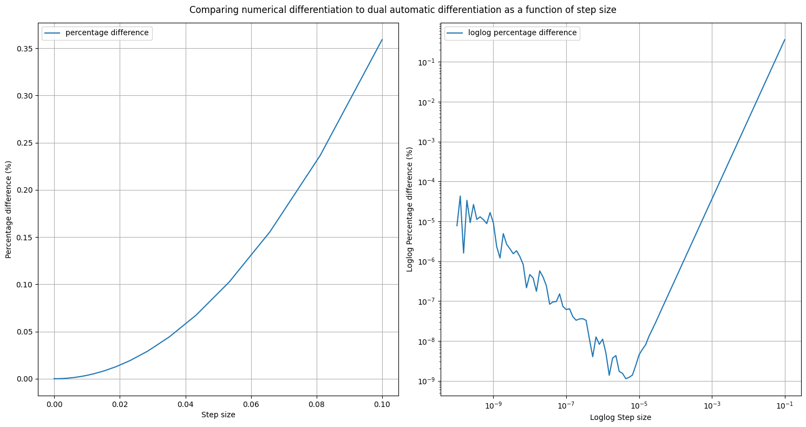
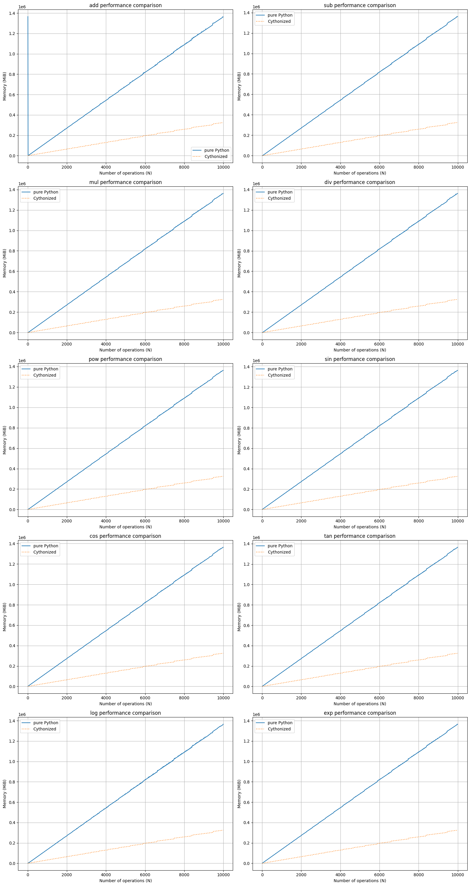
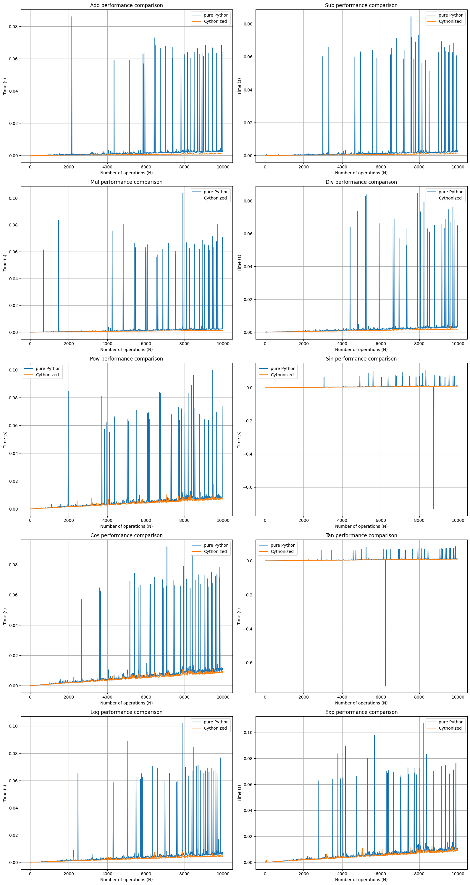

dual_autodiff Tutorial¶
# import modules
import dual_autodiff as df
import numpy as np
import matplotlib.pyplot as plt
# initialise dual number
x = df.Dual(2, 1)
print(f"x.real = {x.real}, x.dual = {x.dual}")
x.real = 2, x.dual = 1
# printing dual number
print(x)
Dual(real=2, dual=1)
# basic arithmetic operations
x = df.Dual(2, 1)
y = df.Dual(3, 2)
print(f"x + y = {x + y}")
print(f"x - y = {x - y}")
print(f"x * y = {x * y}")
print(f"x / y = {x / y}")
x + y = Dual(real=5, dual=3)
x - y = Dual(real=-1, dual=-1)
x * y = Dual(real=6, dual=7)
x / y = Dual(real=0.6666666666666666, dual=-0.25)
# trigonometric operations
print(f"sin(x) = {x.sin()}")
print(f"cos(x) = {x.cos()}")
print(f"tan(x) = {x.tan()}")
sin(x) = Dual(real=0.9092974268256817, dual=-0.4161468365471424)
cos(x) = Dual(real=-0.4161468365471424, dual=-0.9092974268256817)
tan(x) = Dual(real=-2.185039863261519, dual=5.774399204041917)
# the natural logarithm and exponential
print(f"log(x) = {x.log()}")
print(f"exp(x) = {x.exp()}")
log(x) = Dual(real=0.6931471805599453, dual=0.5)
exp(x) = Dual(real=7.38905609893065, dual=7.38905609893065)
# powers
print(f"x**y = {x**y}")
x**y = Dual(real=8, dual=35.090354888959126)
# automatic differentiation
#initialise x = 1.5, with x.dual = 1 to allow for differentiation
x = df.Dual(1.5, 1)
function = x.sin().log() + x**2 * x.cos() #f(x) = log(sin(x)) + x^2 * cos(x)
print(f"log(sin(x)) + x^2 cos(x) = {function.real}")
print(f"d/dx(log(sin(x)) + x^2 cos(x)) = {function.dual}")
log(sin(x)) + x^2 cos(x) = 0.15665054756073515
d/dx(log(sin(x)) + x^2 cos(x)) = -1.9612372705533612
# comparison to analytic and numerical methods:
def f(x):
return np.log(np.sin(x)) + x**2 * np.cos(x)
def dfdx(x):
return np.cos(x) / np.sin(x) + 2*x*np.cos(x) - x**2 * np.sin(x)
print(f"analytic df/dx = {dfdx(x=1.5)}")
def central(f, x, h=1e-5):
return (f(x+h) - f(x-h))/(2*h)
print(f"numerical df/dx = {central(f, x=1.5)}")
analytic df/dx = -1.9612372705533612
numerical df/dx = -1.9612372706409584
# numerical methods with different step counts:
def numerical_compare():
N = np.array([10**i for i in np.linspace(1,10,100)])
steps = 1/N
x = df.Dual(1.5, 1)
dual_result = x.sin().log() + x**2 * x.cos()
results = []
for step in steps:
result = (central(f, x=1.5, h=step))
# print(step)
# print(f"numerical df/dx, step = {step}: {result}")
# print(f"dual automatic df/dx = {dual_result.dual}")
# print(f"percentage difference: {(np.abs((dual_result.dual-result)/dual_result.dual))*100}%\n")
results.append((np.abs((dual_result.dual-result)/dual_result.dual))*100)
fig, ax = plt.subplots(ncols=2, figsize=(15,8))
plt.suptitle("Comparing numerical differentiation to dual automatic differentiation as a function of step size")
ax[0].plot(steps, results, label="percentage difference")
ax[0].set_xlabel("Step size")
ax[0].set_ylabel("Percentage difference (%)")
ax[0].legend()
ax[0].grid()
ax[1].plot(steps, results, label="loglog percentage difference")
ax[1].set_xlabel("Loglog Step size")
ax[1].set_ylabel("Loglog Percentage difference (%)")
ax[1].legend()
ax[1].grid()
ax[1].loglog()
plt.tight_layout()
plt.show()
numerical_compare()

import dual_autodiff_x as dfx
import time
import memory_profiler as mp
import tracemalloc
def timer(func, *args):
start = time.time()
func(*args)
end = time.time()
return end - start
def user(func, *args):
tracemalloc.start()
func(*args)
current, peak = tracemalloc.get_traced_memory()
tracemalloc.stop()
return peak
N = np.arange(10, 10000, 10)
operations = ['add', 'sub', 'mul', 'div', 'pow', 'sin', 'cos', 'tan', 'log', 'exp']
memory = np.zeros((len(N), 2, len(operations)))
for i, n in enumerate(N):
x = df.Dual(np.random.rand(), np.random.rand())
memory[i, 0, 0] = user(lambda:[x+x for _ in range(n)])
memory[i, 0, 1] = user(lambda:[x-x for _ in range(n)])
memory[i, 0, 2] = user(lambda:[x*x for _ in range(n)])
memory[i, 0, 3] = user(lambda:[x/x for _ in range(n)])
memory[i, 0, 4] = user(lambda:[x**x for _ in range(n)])
memory[i, 0, 5] = user(lambda:[x.sin() for _ in range(n)])
memory[i, 0, 6] = user(lambda:[x.cos() for _ in range(n)])
memory[i, 0, 7] = user(lambda:[x.tan() for _ in range(n)])
memory[i, 0, 8] = user(lambda:[x.log() for _ in range(n)])
memory[i, 0, 9] = user(lambda:[x.exp() for _ in range(n)])
x = dfx.Dual(np.random.rand(), np.random.rand())
memory[i, 1, 0] = user(lambda:[x+x for _ in range(n)])
memory[i, 1, 1] = user(lambda:[x-x for _ in range(n)])
memory[i, 1, 2] = user(lambda:[x*x for _ in range(n)])
memory[i, 1, 3] = user(lambda:[x/x for _ in range(n)])
memory[i, 1, 4] = user(lambda:[x**x for _ in range(n)])
memory[i, 1, 5] = user(lambda:[x.sin() for _ in range(n)])
memory[i, 1, 6] = user(lambda:[x.cos() for _ in range(n)])
memory[i, 1, 7] = user(lambda:[x.tan() for _ in range(n)])
memory[i, 1, 8] = user(lambda:[x.log() for _ in range(n)])
memory[i, 1, 9] = user(lambda:[x.exp() for _ in range(n)])
---------------------------------------------------------------------------
KeyboardInterrupt Traceback (most recent call last)
Cell In[14], line 12
10 memory[i, 0, 2] = user(lambda:[x*x for _ in range(n)])
11 memory[i, 0, 3] = user(lambda:[x/x for _ in range(n)])
---> 12 memory[i, 0, 4] = user(lambda:[x**x for _ in range(n)])
13 memory[i, 0, 5] = user(lambda:[x.sin() for _ in range(n)])
14 memory[i, 0, 6] = user(lambda:[x.cos() for _ in range(n)])
Cell In[13], line 3, in user(func, *args)
1 def user(func, *args):
2 tracemalloc.start()
----> 3 func(*args)
4 current, peak = tracemalloc.get_traced_memory()
5 tracemalloc.stop()
Cell In[14], line 12, in <lambda>()
10 memory[i, 0, 2] = user(lambda:[x*x for _ in range(n)])
11 memory[i, 0, 3] = user(lambda:[x/x for _ in range(n)])
---> 12 memory[i, 0, 4] = user(lambda:[x**x for _ in range(n)])
13 memory[i, 0, 5] = user(lambda:[x.sin() for _ in range(n)])
14 memory[i, 0, 6] = user(lambda:[x.cos() for _ in range(n)])
File ~/dis/dual_autodiff/dual_autodiff/dual.py:206, in Dual.__pow__(self, x)
204 R_real = self.real**x
205 R_dual = x*self.real**(x - 1) * self.dual
--> 206 return Dual(R_real, R_dual)
File ~/dis/dual_autodiff/dual_autodiff/dual.py:12, in Dual.__init__(self, real, dual)
3 class Dual:
4 """
5 A class to implement dual numbers.
6
(...)
9 dual (int, float): dual part of dual number.
10 """
---> 12 def __init__(self, real, dual):
13 """
14 Initialises Dual with given parameters.
15
(...)
18 dual (int, float): dual part of dual number.
19 """
20 self.real = real
KeyboardInterrupt:
plt.figure(figsize=(16,30))
for i, operation in enumerate(operations):
plt.subplot(5,2, i+1)
plt.plot(N, memory[:, 0, i], label="pure Python")
plt.plot(N, memory[:, 1, i], label="Cythonized", linestyle='dotted')
plt.xlabel("Number of operations (N)")
plt.ylabel("Memory (MiB)")
plt.title(f"{operation} performance comparison")
plt.legend()
plt.grid(True)
plt.tight_layout()
plt.show()

N = np.arange(10, 10000, 10)
operations = ['add', 'sub', 'mul', 'div', 'pow', 'sin', 'cos', 'tan', 'log', 'exp']
times = np.zeros((len(N), 2, len(operations)))
for i, n in enumerate(N):
x = df.Dual(np.random.rand(), np.random.rand())
times[i, 0, 0] = timer(lambda:[x+x for _ in range(n)])
times[i, 0, 1] = timer(lambda:[x-x for _ in range(n)])
times[i, 0, 2] = timer(lambda:[x*x for _ in range(n)])
times[i, 0, 3] = timer(lambda:[x/x for _ in range(n)])
times[i, 0, 4] = timer(lambda:[x**x for _ in range(n)])
times[i, 0, 5] = timer(lambda:[x.sin() for _ in range(n)])
times[i, 0, 6] = timer(lambda:[x.cos() for _ in range(n)])
times[i, 0, 7] = timer(lambda:[x.tan() for _ in range(n)])
times[i, 0, 8] = timer(lambda:[x.log() for _ in range(n)])
times[i, 0, 9] = timer(lambda:[x.exp() for _ in range(n)])
x = dfx.Dual(np.random.rand(), np.random.rand())
times[i, 1, 0] = timer(lambda:[x+x for _ in range(n)])
times[i, 1, 1] = timer(lambda:[x-x for _ in range(n)])
times[i, 1, 2] = timer(lambda:[x*x for _ in range(n)])
times[i, 1, 3] = timer(lambda:[x/x for _ in range(n)])
times[i, 1, 4] = timer(lambda:[x**x for _ in range(n)])
times[i, 1, 5] = timer(lambda:[x.sin() for _ in range(n)])
times[i, 1, 6] = timer(lambda:[x.cos() for _ in range(n)])
times[i, 1, 7] = timer(lambda:[x.tan() for _ in range(n)])
times[i, 1, 8] = timer(lambda:[x.log() for _ in range(n)])
times[i, 1, 9] = timer(lambda:[x.exp() for _ in range(n)])
plt.figure(figsize=(16,30))
for i, operation in enumerate(operations):
plt.subplot(5,2, i+1)
plt.plot(N, times[:, 0, i], label="pure Python")
plt.plot(N, times[:, 1, i], label="Cythonized")
plt.xlabel("Number of operations (N)")
plt.ylabel("Time (s)")
plt.title(f"{operation.capitalize()} performance comparison")
plt.legend()
plt.grid(True)
plt.tight_layout()
plt.show()
